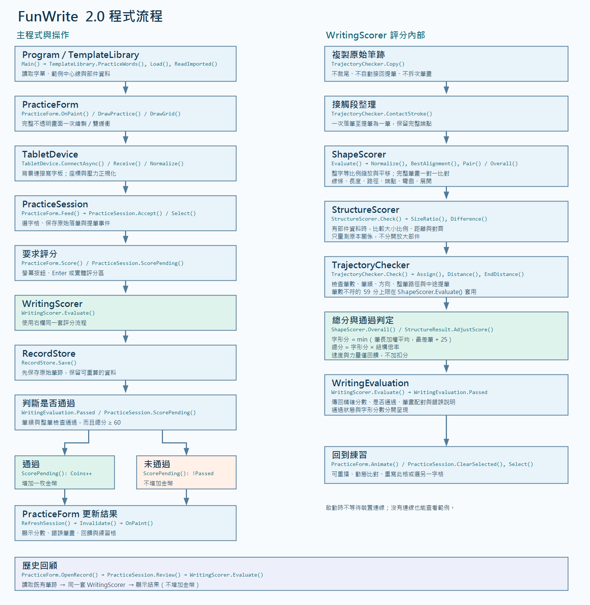

2026/11/06：目前程式為 2.1，新增介面選字、位置交換與離線新增字；本文件的 2.0 評分公式仍適用。下方流程圖保留為 2.0 核心流程，2.1 操作請見專案 README。
整理日期：2026/10/25。本文的 1.0 指現有 FunWrite1.1 資料夾內、專案名稱為 FunWrite1.0 的原始碼，主要比較 HWT.cs 與 PanelForm.cs。2.0 指本次完成精簡重構的版本。
2.0 將「字形像不像」和「書寫過程正不正確」分開判斷。字形高分仍可能因筆順錯、反向或中途提筆而不通過。它是軌跡與幾何比對，目前沒有使用 OCR、機器學習或語意辨識。
| 項目 | 1.0 | 目前 2.0 |
|---|---|---|
| 資料處理 | Stroke／Stroke1 預處理，部分近距離斷點可能被接回。 | 保留接觸點及提筆事件；壓力大於零到提筆是一整筆，不自動接回。 |
| 縮放 | ReSize／ReSize1 使用共同倍率做整字等比例縮放。 | 整字以最長邊等比例正規化，再容許有限整字平移。沒有單筆／部件局部放大、獨立寬高拉伸或旋轉校正。 |
| 比較單位 | 以次筆畫分段，將中心、長度、方向量化成特徵索引。 | 整筆軌跡：線條覆蓋、筆長、路徑進度、起收筆、彎曲與橫縱展開。32 個進度點只是取樣，不是拆成 32 筆。 |
| 配對方法 | Match2 啟發式配對。 | 等筆數且不超過 16 筆時，使用全域一對一配對，避免同一筆重複抵銷漏筆。 |
| 扣分變化 | 中心或分段長度超過門檻時，匹配值可能直接變成 0.01，容易突然大幅掉分。 | 在容錯外平滑扣分；最弱筆畫也會限制總分，避免其他長筆畫掩蓋嚴重錯誤。 |
| mapping 的意思 | 前兩列保存配對索引，第三列保存匹配值，後續用於分數及畫面。0.01 是特定失配分支指定的低值；0.09 不是一個統一通過門檻。 | 仍使用配對索引及逐筆分數提供顏色／說明；通過由 WritingScorer 統一判斷，不只看某個 mapping 值。 |
| 總分 | 將映射匹配值加總，再除以範例整筆數。 | 先取「筆長加權平均」與「最差筆分＋25」的較低者，再乘部件結構倍率。 |
| 通過／金幣 | 部分流程分數大於 60 就可獲獎，未獨立要求完整軌跡檢查通過。 | 最終分至少 60，且筆數、筆順、方向、整筆軌跡全部檢查通過才給幣；回顧紀錄不加幣。 |
| 部件結構 | 沒有「田／心」等具名部件的大小、間距及對齊檢查。 | 資料完整且最外層為上下／左右結構時，檢查相對寬高、間距、對齊並提供文字回饋。 |
| 字庫 | 原有手寫範例與舊資料流程。 | 乾淨整筆 TXT 與匯入 JSON；相同字 JSON 優先。已有 22 字可用，每頁最多 12 字，可改字單免重編。 |
| 程式架構 | UI、評分、註冊、資料庫、遊戲與測試檔案混雜。 | 13 個正式 C# 檔，分開處理筆跡、裝置、UI、評分與存檔；不需要 SQL 或帳號登入。 |
| 畫面與裝置 | 多控制項及舊繪圖／連線流程。 | 單一不透明雙緩衝畫面；寫字板 SDK 在 STA 背景執行緒連線，避免阻塞 UI。 |
| 執行環境 | 舊 .NET Framework WinForms、32 位元裝置 SDK 與舊套件依賴。 | Windows、.NET Framework 4.8、x86 WinForms；保留必要 DigiNote SDK，離線執行。 |
注意：原始 1.0 本身也是整字等比例縮放。移除「寬高分別補償」是針對早期修改中的 2.0，不能當作原始 1.0 與目前 2.0 的差別。
字形分 = min(依筆長加權平均分, 最差筆分 + 25) 最終分 = 字形分 × 結構倍率 筆數不符：最高 59 分，且不通過 通過 = 最終分 ≥ 60 且筆數／筆順／方向／軌跡檢查通過 沒有適用部件資料：結構倍率 = 1
| 項目 | 目前容錯／門檻（相對整字最長邊） |
|---|---|
| 筆長比例 | 約 0.8～1.25 倍內不因長度比例開始扣分 |
| 路徑進度差／端點差 | 字形扣分的容錯分別為 0.08／0.10；軌跡通過另有距離 0.16、端點 0.30 的門檻 |
| 橫縱展開差 | 0.08；有效展開不足範例 40% 時逐漸加重 |
| 部件比例 | 相對範例約 0.8～1.25 倍；近乎零寬／高的軸不強算比例 |
| 部件間距／對齊 | 分別容許最長邊 5%／6% 差異，超出後平滑扣分 |
畫面分數向下取整；通過使用未取整值。90 分但筆順錯仍不通過，紅色回饋與通過文字需一起看。
驗證：九套測試通過，其中評分稽核為 22 字、222 項零失敗。94 筆舊紀錄在本次精簡重構前後的通過結果完全相同，分數最大差約 0.00005182（基準 CSV 取四位小數）。這項比較是 2.0 重構前後，不是 1.0 和 2.0 分數相同。
跨版例子：既有「四」紀錄 154308_706，舊核心約 72.9 分、新核心約 46.4 分，後者未通過。其他字若改了範例來源，分差也包含字源差異。
